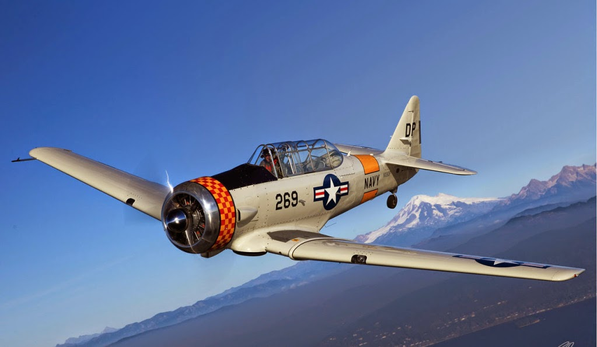

✈ AVIONES ✈

Definicion:
Un avión, también llamado aeroplano, es un aerodino de ala fija con mayor densidad que el aire, capaz de volar gracias a la sustentación generada por sus alas y propulsado por uno o más motores. Su principio de vuelo se basa en la diferencia de presiones entre la parte superior e inferior del ala, lo que produce la fuerza ascendente que permite mantenerse en el aire. Los aviones cuentan con tres partes principales: alas, motor y tren de aterrizaje
Clasificacion:
- Aviones Pasajeros: Diseñados para transporte comercial, pueden tener fuselaje estrecho o ancho (como el Airbus A380).
- Aviones de carga: Optimizados para bienes, con fuselajes anchos y puertas traseras grandes.
- Aviones militares: Incluyen cazas, bombarderos y aviones de reconocimiento, utilizando materiales resistentes como titanio y aleaciones ligeras.
Características Técnicas:
- Materiales: DiConstruidos con aluminio, titanio, acero y compuestos de fibra de carbono.
- Combustible: Utilizan principalmente Jet A-1 (queroseno), Jet B (mezcla para climas fríos), Avgas (para motores de pistón) o bioqueroseno.
- Historia: El primer vuelo sostenido y controlado fue realizado por los hermanos Wright en 1903, mientras que el primer vuelo autopropulsado fue el del Éole de Clément Ader en 1890.
- Registros: El avión más grande fue el Antonov AN-225 (88 metros), y el vuelo más largo sin escalas dura 15 horas y 25 minutos.
Fuentes: